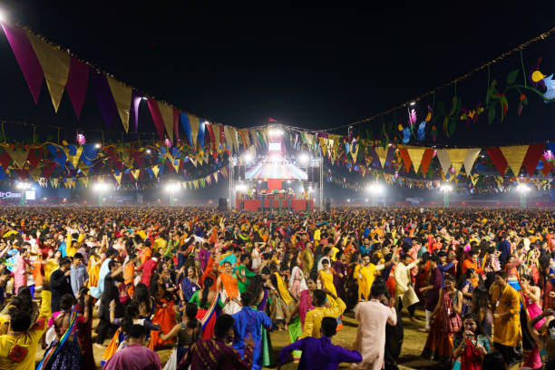

Back in our parents' days

Festivals used to be all about family, religion, appreciating our history and coming together as a society to spread joy and happiness. My mom used to tell me a lot of stories about how, growing up, everyone in her town celebrated every single festival together, be it Eid, Diwali, Christmas or Guru Purab. Her whole town gathered in the ground and had a feast along with various plays and activities for everyone. Hearing her talk so passionately about festivals always made me so happy. Spending time with your family, praying or doing various activities, had always been rooted in me.
I decided to write this blog to share my recent experience when I went out with my friends for garba.
My last experience

Last night, I went out with my friends for garba. I'd expected there to be a lot of Gujarati songs that everyone went absolutely crazy to, playing dandiya. What I wasn't expecting was to find people twerking to "grami" over there. It was honestly a cultural shock to see what festivals have turned into today. All I saw everywhere were kids my age drunk out of their minds, falling on top of each other or smoking cigarettes. I remember seeing a few uncles and aunties my mom's age over there, standing in a corner, not able to enjoy at all because I'm sure they too expected a somewhat religious environment and not an outdoor DJ playing item songs in the name of festival.
If you want to know more about these traditions, you can read about garba and dandiya raas.
Then and now
This is how I see the difference between the festivals my mom describes and the ones I saw.
| Aspect | My parents' time | Today |
|---|---|---|
| Atmosphere | Family, prayer and community | Loud, like a club night |
| Music | Traditional and devotional songs | DJ and item songs |
| Who enjoyed it | Everyone, young and old | Mostly the young; elders stand aside |
What should change
- Festivals shouldn't be considered as club nights
- People should have basic decency to not consume intoxicants during religious gatherings
- Attendees who aren't able to handle themselves should be asked to leave the venue
- Culturally appropriate songs should be played
- A basic decent dress code should be established for all attendees
How we can start
- Organisers choose traditional music for the evening.
- Venues set clear rules about intoxicants and enforce them.
- Families attend together, so that all age groups feel welcome.
- Every attendee follows a simple, respectful dress code.
What worries me
I hate that I won't be able to experience religion the way my parents used to in their youth because of the culture that's being normalized in our society today.
Conclusion
I really think we need to recognize what is wrong with the way we have started to dishonor festivals. They were never meant for loitering. Showing some basic respect in the name of god is something everyone should learn. Clubbing and festivals are two very separate things with different cultures and I really don't think they should be mixed the way they are being. It is really disrespectful. I cannot imagine how my mom must have felt if she saw how the youth today celebrate.
Thank you for reading my first blog. I hope it gets you thinking on what we are doing and how we collectively as a generation need to change our mindset.